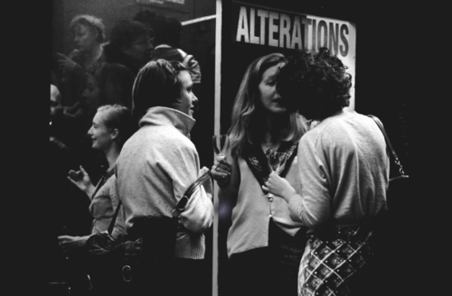

William Hsu for Alterations
A tour in the Wellington Harbour
18.12.11
For William Hsu’s project, viewers were invited to assemble at Wellington’s Queens Wharf at 4.30 pm on the 18th of December 2011. Once there, they were asked to board a chartered East by West Ferry which departed on an unrevealed route. It was blowing a strong southerly and once out in the harbour the ferry rose and fell with the swell.
The non-destination ferry trip in the Wellington Harbour included passing along the Petone forshore, near the former sites of the historic Gear Meat Company and Petone Swimming Baths.
Once the ferry neared Petone a member of the crew presented an audio commentary over the intercom composed of fragmented accounts of the history of the area. The commentary tracked the entwined relationships of agricultural production and refrigerator shipping to the harbour and Petone township.
He spoke of how the blood and offal discharged into the Harbour by the Gear Meat Company had turned the sea red attracting sharks and rendering it unfit and unsafe for swimming. The commenatary ended with a description of Edwin Jackson’s development of the Petone Swimming Baths in 1887 as a strategy to respond to the transformation of the Petone Harbour.
Some of the passengers noted a parallel in the story to the markedly red earth that stains the sea at the edge of Petone.
The ferry completed its loop, by travelling past the mouth (where the harbour joins with Cook Strait and then the Pacific Ocean), returning to Queens Wharf around 5:30pm after approximately an hour at sea.
0 notes / Permalink
0 notes / Permalink
0 notes / Permalink
Lauren Winstone and Nick Spratt for Alterations
Responses to New Zealand Potter Magazine
31.7.11 - 31.12.12
·
Lauren Winstone and Nick Spratt have collaboratively developed Responses to New Zealand Potter magazine, an online research project which can be found here.
The project invites a new generation of practitioners and theorists to revisit the ideas and critical dialogue on ceramic art and culture that appeared in the founding issues of the magazine.
Each invited guest will give an interview discussing selected articles taken from the first two volumes of the magazine. The transcripts of these interviews will be published on the website.
Re-reading is a key strategy used in this project to contextualize the historical material within its current situation. The project aims to review and build the history of ceramic discourse in New Zealand amongst art and design disciplines.
Similar to the original periodical, the interviews will be published every six months. The project will grow over the course of two years, extending Alterations’ life-span and come to a resolution in 2012.
·
0 notes / Permalink
Alex Martinis Roe interviews Wendy Webster for Alterations
Online broadcast
29.6.11
·
On 29 June 2011 at 20:00 NZST / 10:00 CEST Alterations aired on this blog a video interview between artist Alex Martinis Roe and historian Wendy Webster.
The video was presented in black and white and in split screen format showing both women engaged in a conversation via Skype.
Wendy the proposed subject of this interview began by conversely asking Alex the first set of questions. The role of the interviewer and interviewee kept changing between them.
As the interview progressed both women probed the ethics of involving participants in the creation of a work – be it a book, film or research project – which claimed single authorship. The image of the video disappeared when the speakers began to question the authority given to image over speech in documentary production.
The video document escapes to settle on any specific form and instead oscillates between research, critique, art and performance. The interview presents the artist and the historian at work.
·
0 notes / Permalink
Alex Martinis Roe interviews Wendy Webster, Alterations, Artefact
0 notes / Permalink
Nick Spratt and Lauren Winstone, Alterations, Artefact
0 notes / Permalink
A Reader for Alterations
Sophie Calle, Marjolijn Dikman, Liam Gillick, Idris Khan, Abbas Kiarostami, Alec Soth, Susan Sontag, Wolfgang Tillmans, Roman Ondak, Bik van der Pol, Tris Vonna-Michell
11.4 - 15.4.11
26.4 - 10.5.11
·
An exhibition in book form - A Reader is a compilation of texts by numerous authors who have a reflexive interest in the production of the reproduction. Often they use the tool of photography to make this known. Their work operates as both a commentary and reflection on the mechanism of the copy that publishing necessitates.
A Reader is a candid exhibition of secondary and previously disseminated material - some of which is now out of print/hard to find and some forgotten. In drawing attention to the copy, the compilation authenticates the primary source and brings it closer to the reader.
This one off publication is currently in circulation. To date it has been available for viewing at public libraries in New Zealand. The public library is a site to encounter art mediated through physical and online journals and books. The public library also used to loan reproductions of art to readers in the past. Alterations taps this history and distributes research findings under this framework.
·
0 notes / Permalink
A Reader, Alterations, Artefact
0 notes / Permalink
Kelvin Soh for Alterations
Everything Must Go
31.3.11 - 2.4.11
·
Kelvin Soh’s exhibition for the taking took on the structure of a three-day clearance and was held at the end of the financial year.
A variety of products were presented on wooden delivery crates offering a line up of goods, stacked and piled, which included unlabeled bottled water, screen-printed tee shirts and printed matter.
Themed around water as a resource, the printed matter included a wallpaper decorated with marine iconography, posters depicting a section of water sourced from Google Earth and reproductions of the text ‘Tragedy of the Commons’ by Garrett Hardin.
A banner image with block colours and a photographic image of the unbounded sea was suspended in one corner of the space and functioned as an accompanying ‘text’ for the show.
Kelvin’s exhibition, as proposition for a gift economy, seemed to contest the commercialization of water and suggested the impossibility of trying to objectify such an expansive and timeless form.
·
0 notes / Permalink
Kelvin Soh, Alterations, Artefact
0 notes / Permalink
Andrea Bell curates Thea Rechner for Alterations
Observations, propositions and re-presentations
4.2.11 - 25.2.11
·
Andrea Bell invited Melbourne based artist Thea Rechner to reside at Alterations for the month of February.
For the duration of the residency Thea primarily worked onsite surveying the gallery grounds, conversing with neighbours to uncover local histories and exploring off-beaten tracks – often bringing material found during these field trips back into the gallery space. Her travelogue includes a steady stream of photographs, short films, drawings and writing which can be found on http://alterations-resident.blogspot.com/
Thea’s approach to the residency was informed by her online conversations with Andrea. A sample of Andrea’s critical responses and guiding thoughts to Thea’s studio time can also be found on the blog.
During the residency Thea made a proposal for a future audience to yield greengage plums from trees planted in the gardens of Plimmer Steps. She first presented greengage plums to gallery visitors to snack on. Then the pips she collected from these encounters were later planted under February’s full moon – determined as optimum planting conditions. There is hope that in the future these fruit trees will stand along with the oaks on either side of the gallery; the oldest was planted by John Plimmer upon his arrival in Wellington.
As a closing gesture to her time of residence Thea presented a self-guided tour of Plimmer Steps and its vicinity. She drew this as a diagram directly to the windows of the gallery. This map can also be downloaded from the blog and is intended for pedestrians and tourists to gain a personalised view of local experience.
·
0 notes / Permalink
Andrea Bell and Thea Rechner, Alterations, Artefact
0 notes / Permalink
Deimantas Narkevičius for Alterations
Film screenings of Scena and The Role of a Lifetime
25.1.11 - 31.1.11
Alterations facilitated a close reading session for the opening of this project. The following is an account of the discussions that took place.
·
It is cold the evening we gather to discuss the selected readings entitled To have memories of architecture. We sit outside the gallery space huddled on woollen blankets. The first to speak is the film Scena by Deimantas Narkevičius. The film was screened from a projector poised resourcefully on a stack of cardboard boxes inside the space. The scale of the projection is no larger than an A5 – reminiscent of a postal envelope and rear-projected onto the gallery window. The film presents a series of interviews with people who work inside the CAC, Contemporary Art Center in Vilnius. The Lithuanian voices comment on the very physical and bodily affects architecture can produce; particularly in public spaces built during modern communism’s aspiration for permanence and social function.
Caught between the inside and outside of the gallery, an interstitial space emerges. It’s a discursive space built by readers wanting to configure new relations to the space. The conversation revolves around the form, function and politics of the gallery space.
Daniel Buren’s practice is used as a case study to address the possibility of a work to go beyond the physical limitation of the gallery space. It is acknowledged that the gallery model we continue to fall back on is the modernist gesture, a dematerialized white cube. By questioning its own operation it has created new contexts and content for art. Yet where to from here? How can art be produced outside the gallery context without it becoming novelty or a branding exercise? How reliant is art on the gallery frame? Increasingly the work is illuminated through documentation, exchanged in conversation online and offline, translated in an essay.
Sometimes, you can spend the whole day walking from one room to another of the gallery looking and still not find art. Sometimes, the gallery allows for meditation, reflection, illumination. It is a place that serves to remind us of our own limits, our presence, our own alienation and differentiation.
The film makes several loops. Despite our aim to speculate on other contexts, other spaces for the production of art we return to the legacy of the modernist gallery and its architectural forms. Our insatiable desire for an elsewhere, an otherwise becoming part of its iterations.
Thank you to Alice Baxter, Daniel Birnbaum, Daniel Buren, Tim Corballis, Michel Foucault, Hans Haacke, Raewyn Martin, Rachel O’Neil, Martin Patrick, Simon Sheikh and Erica van Zon.
·
0 notes / Permalink
Deimantas Narkevičius, Alterations, Artefact
0 notes / Permalink
Richard Frater for Alterations
retouch some real with some real
2.12.10 - 5.12.10
·
Thursday morning the two front windows of Alterations were removed.
The door was left shut. The exhibition space was allowed to relax – ventilate.
Although subtle and almost unnoticeable, this opening gesture by
Richard invited the city in and left the space open to chance
and potential chaos. The space was left to weather.
Richard’s work presents a system where one mode of production
becomes the raw material for another. You can see this idea
being applied to his early floor works made from new commercial
designer carpets and reworked surfaces. As treatments to interior spaces,
these works collect the residue from the encounter over time.
More recently he has been producing vignettes which are
close to Structuralist cinema. These are studies on the effects of
time placed on an object. For Richard, transformation and the
reframing of material is of key interest.
Alterations invited Richard to develop a project which engaged with
cinematic devices and addressed the architecture of the space.
Alterations was left open and unattended during the time
Richard was in Wellington. He re-instated the windows
on leaving the city. The effects of this re-instatement suggests
that the city and all that is framed from the line of the
gallery windows is now on exhibition.
·
0 notes / Permalink
Richard Frater, Alterations, Artefact
0 notes / Permalink
address
people

girls
0 notes / Permalink
Ben Curnow for Alterations
Bass Practice
30.11.10
·
Ben Curnow was the subject of a portrait work presented by artist
Julian Dashper at Canary Gallery in 2004.
Ben occupied the space in his role as a curator and
in doing so was the inaugural exhibit at the space.
Julian has left an indelible mark on conceptual art and its history
in New Zealand, and has inspired a younger generation of artists
and curators through his ambition for working across forms
and exhibition spaces.
Julian invited Ben to be the portrait after they spent
time together at the Sydney Biennale.
Ben had just been in Wellington the week before their conversation,
catching up with friends he played in punk bands with in the early 1980s.
Julian once had an idea for the Venice Biennale where he
wanted to occupy the exhibition pavilion by practicing trumpet.
More recently Julian announced to a room of friends that
Ben had a hidden talent for playing bass.
In response to the Alterations project brief and in light of our
invitation for Ben to present an exhibition as the subject
of another artist’s work, Ben played bass guitar as the inaugural
gesture to the space.
He has set a ground for the projects to come.
·
0 notes / Permalink

Ben Curnow, Alterations, Artefact
0 notes / Permalink